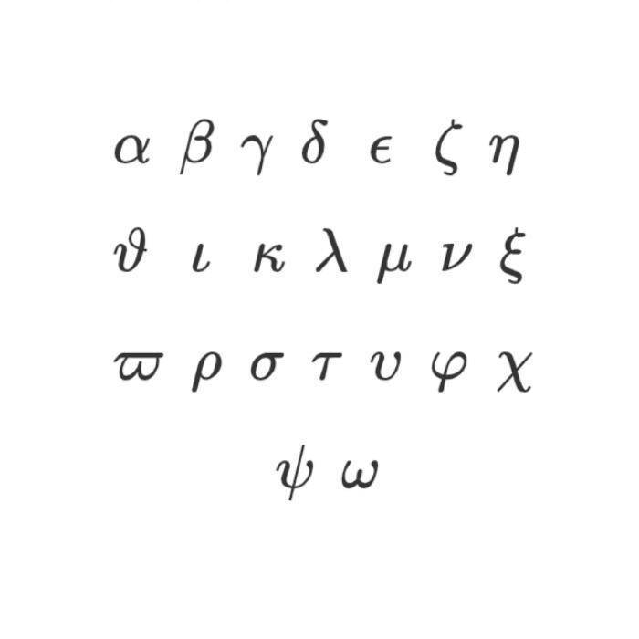

我是一个乐观开朗的男孩子，充满活力，热爱探索新事物。我总是积极看待生活中的挑战，并乐于与他人分享我的快乐和热情。我相信，我的笑容和积极的态度能够感染周围的人，让他们也感受到生活的美好。 我对未来充满期待，坚信只要努力就能实现自己的梦想。我热衷于学习新知识，喜欢与不同背景的人交流，以了解更多元的观点和经验。我尊重每个人，相信每个人都有自己独特的价值和能力，而这也让我在人际交往中收获了信任和友谊。 在我的业余时间，我喜欢参加各种活动，尤其是运动和艺术类活动。我认为运动能让我保持健康的体魄，而艺术则能激发我的创造力和想象力。我也喜欢与家人和朋友共度美好时光，因为在我心中，亲情、友情都是生活中最宝贵的财富。 总的来说，我是一个乐观开朗的男孩子，希望通过自己的积极态度和热情能够给周围的人带来正能量。我热爱生活，勇于面对挑战，并期待在未来的日子里继续成长和学习，为自己的人生书写精彩的篇章。

版权所有©️plafle